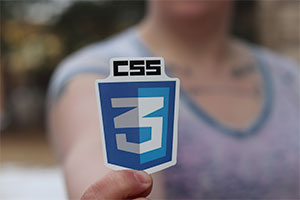

Ctec Cursos de Tecnologia
Cursos de HTML5 - CSS3 e JavaScript
Curso de HTML5
Crie um Site Simples em até 89h. Com
Professores que já atuam na area.
E também, projetos práticos.
Este curso foi desenvolvido para auxiliar na criação de páginas Web, por meio do Hyper Text Markup Language – mais conhecido como HTML. Para quem nunca ouviu falar dessa linguagem de marcação, explicamos que se trata de uma das mais populares. Aquilo que você vê quando abre uma página na Internet é uma interpretação que seu navegador faz do HTML. Criada por Tim Berners-Lee em 1990, quando desenvolveu a revolucionária World Wide Web, essa linguagem utiliza um formato de código simples, que não precisa da ajuda de aplicativos especiais. Para criar um documento HTML, apenas o bloco de notas do computador já é o suficiente! Na parte inicial do curso, você se familiarizará ou relembrará os principais termos técnicos relacionados à Internet, com explicações sobre protocolos e linguagem de marcação. Depois, os conteúdos explicam a importância do HTML, seus principais comandos até chegar às dicas para você criar um documento, formatá-lo, criar listas e muito mais. Para completar, nosso curso ainda apresenta exercícios que o ajudarão a fixar os conceitos apresentados. Após concluir este curso, você poderá prosseguir seus estudos matriculando-se no HTML – Avançado!
Detalhes
- Instalação do Visual Studio Code
- O que há em uma página da Web
- Módulo 1 – Configurar a estrutura do seu aplicativo Web
- Módulo 2 – Adicionar um HTML Básico ao seu aplicativo Web
- Módulo 3 – Aplicar estilos ao HTML com o CSS
Curso de CSS3
Crie um Site Simples em até 89h. Com
Professores que já atuam na area.
E também, projetos práticos.
Dividido em cinco módulos, este conteúdo lhe proporcionará conhecimentos básicos na linguagem de formatação Cascading Style Sheets (CSS). Para isso, apresentamos exemplos de aplicação e exploramos suas principais propriedades e atributos, além de oferecer dicas e curiosidades sobre a evolução HTML/CSS. Vale saber que a linguagem CSS surgiu a partir da evolução das páginas de Internet e a necessidade de se criar sites mais atrativos. Para atender à expectativa por um design mais sofisticado, as páginas começaram a apresentar cada vez mais tags, o que deixou sua performance lenta. Sem contar o trabalho quando era preciso formatar, por exemplo, um link que era replicado em trezentas páginas. Nesses casos, a formatação era feita um a um. Foi assim que surgiu a ideia de separar estilo e estrutura. Lançada por Hakon Wium Lie e Bert Bos em 1995, a linguagem CSS ficou com a função de alterar a formatação e tornar os sites mais bonitos, além de facilitar a montagem do layout. Em outras palavras, CSS é o jeito mais simples de fazer o HTML parecer bonito!
Detalhes
- Módulo 1 – Introdução
- Módulo 2 –
- Módulo 3 – Principais Propriedades do CSS
- Módulo 4 – Agrupando e Alinhando Elementos
- Módulo 5 – Conclusão e Novidades
Curso de JavaScript
Crie um Site Simples em até 89h. Com
Professores que já atuam na area.
E também, projetos práticos.
EA Linguagem JavaScript é conhecida como uma linguagem de programação leve, interpretada, não compilada e orientada a objetos. Pode ser definida, ainda, como a linguagem de script voltada para páginas Web, baseada em protótipos, multi-paradigma e dinâmica, reconhecendo também os estilos orientados a objetos. A Linguagem JavaScript é executada no client-side da Web, podendo ser utilizada para esboçar o comportamento de uma página Web por meio da ocorrência de um evento. Com uma estrutura e uma sintaxe de fácil aprendizagem, o JavaScript também é considerado uma poderosa linguagem no mundo da Internet e, justamente por isso, vem sendo amplamente aplicada para controlar o comportamento de páginas Web. Se, para você, Java e JavaScript são a mesma linguagem, então, esse curso introdutório foi feito para tirar essa e outras dúvidas!
Detalhes
- Princípios do JavaScript
- Introdução ao JavaScript
- Conceito da linguagem script
- Diferenças entre Java e JavaScript
- Vantagens e desvantagens da linguagem script